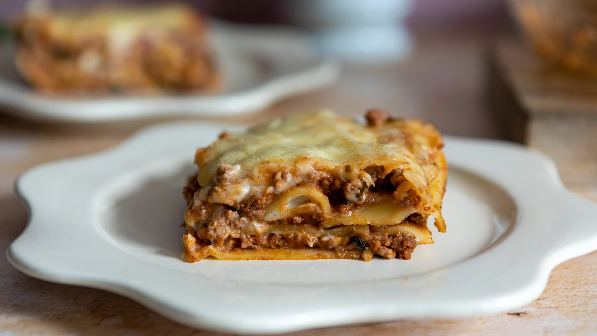

Lasagne

Description
Lasagne is a popular dish, especially among children and young people.
It doesn't take much time to prepare, as the final cooking stage takes place in the oven without our assistance. The result is well worth it. This delicious dish is also a good choice for Sunday lunch.
Ingredients (4 servings)
Meat mix
- 1 packet of lasagna
- 1 large onion
- 2 garlic cloves
- 400 g minced beef
- cooking oil
- oregano
- basil
- barbecue seasoning
- salt
- tomato paste/ketchup
- minced pepper
- 1 can of peeled tomatoes
Béchamel
- 50 g of butter
- 50 g finely ground flour
- 500 ml of milk
- a pinch of nutmeg
- salt
- minced pepper
- hard cheese
Steps
- Prepare the meat mixture: fry finely chopped onion and sliced garlic in oil until golden brown.
- Then add the minced meat and, stirring constantly and separating the pieces from each other, let it brown. Season the meat with salt and spices, add ketchup.
- Season generously to achieve a distinctive flavour. Fry until the meat is cooked. Then add the tinned tomatoes, simmer briefly and season to taste.
- For the béchamel sauce, melt the butter, add the plain flour and make a roux.
- When the roux is fried, add milk, nutmeg, salt and ground pepper. Cook, stirring constantly, until thickened (consistency similar to pudding).
- Line a baking dish with baking paper. Finely grate the hard cheese.
- Start layering the lasagne in a baking dish. Place a layer of lasagne sheets, then add some of the meat mixture and a layer of béchamel sauce, then another layer of pasta sheets and repeat the process until all the ingredients are used up.
- The last layer should be meat and béchamel sauce, which we sprinkle with grated cheese. Bake at 180 °C for about 45 minutes.